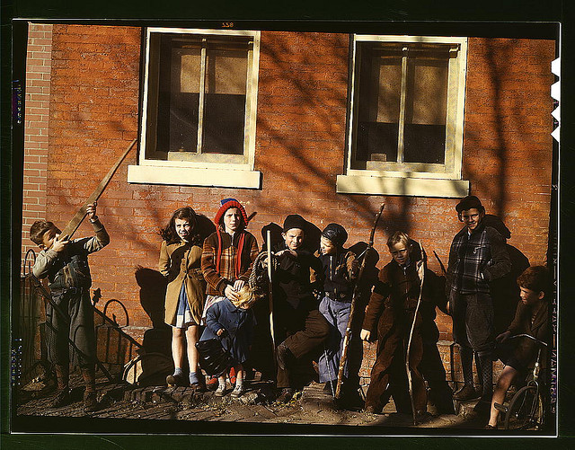
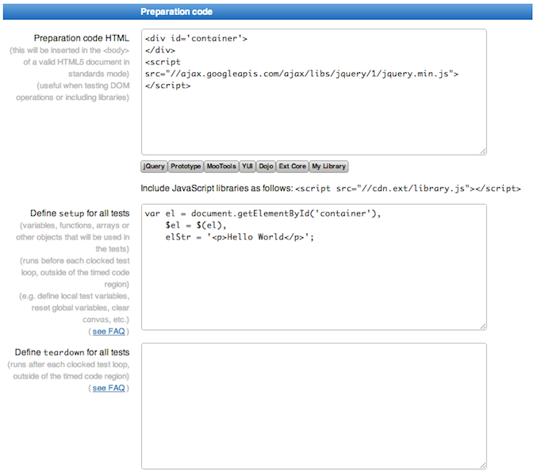
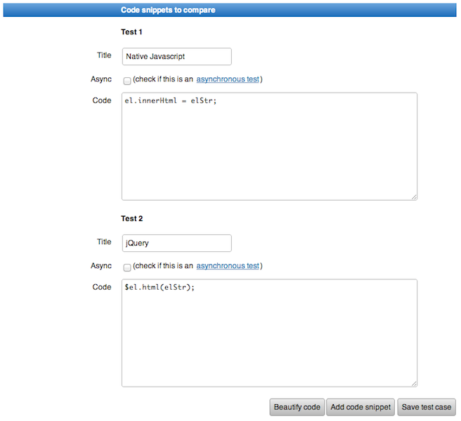
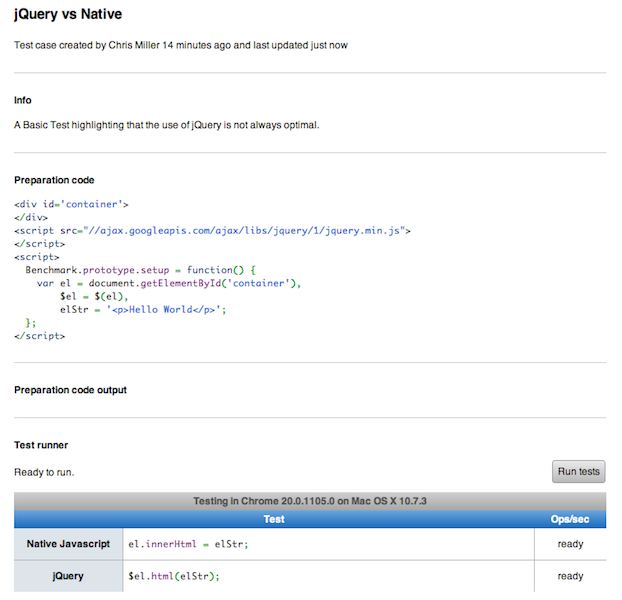
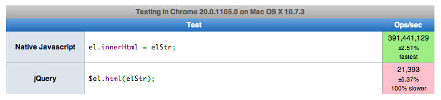
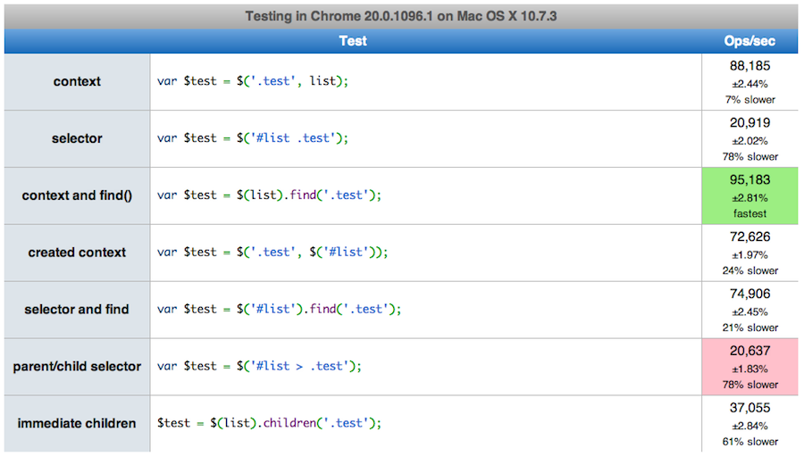
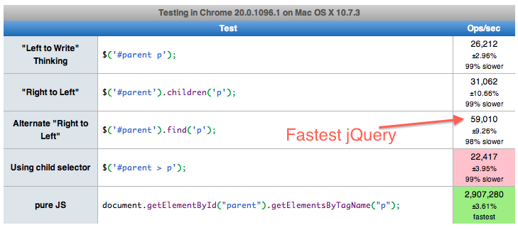
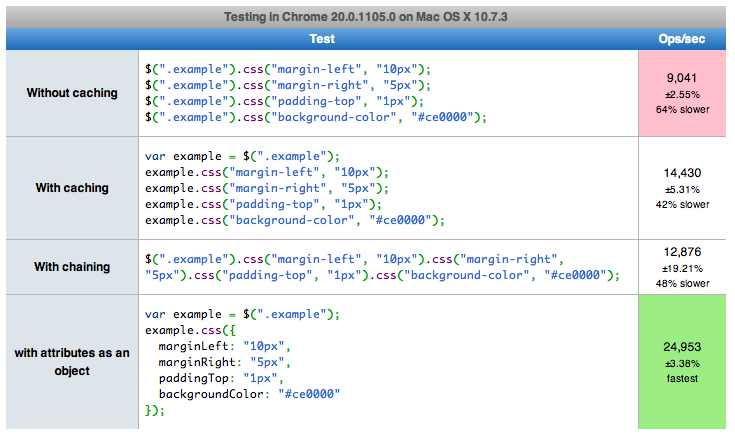
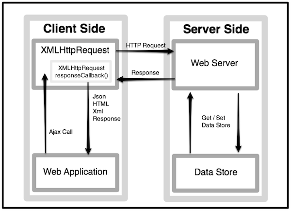

Connect to "qguest", your login information is printed on your badge.
Talk to us on Twitter
Use hashtag: #sdjsu or Follow: @javascriptu
JavaScript Frameworks are evil!
JavaScript Frameworks are evil!
Frameworks are just a tool to help you develop more quickly.
They can take care of a lot of the little details when writing code.
Use of a framework should be determined on a per-project basis.
Frameworks aren't evil, the people who use them incorrectly are.
You need to learn JavaScript before using any frameworks!
Back in my day
We didn't have JavaScript frameworks. we had to write all of our own code and there was a war on so variables were scarce.
You need to learn JavaScript
In a perfect world you should learn the ins and outs of a language.
The industry is changing.
Everyone cannot be grouped in black & white categories.
The traditional JavaScript "sandbox" is disappearing.
Sometimes a basic understanding is all that is needed.
Playing around with a framework can help you get a better understanding of JavaScript.
Before anyone gets mad

Before anyone gets mad
It's important to learn about:
What the framework does.
How it does it.
What the underlying code is doing.
The concepts and techniques its using to accomplish tasks.
Keep an open mind. Frameworks are not always the answer, sometimes *your* framework isn't the best option.
Separate fact from hype, just because everyone is using __ this week doesn't mean you need to.
jQuery
What we'll cover:
How jQuery is built
Ways you can use jQuery
Selectors & Sizzle
Ajax Requests
Event handling
Plugins
What we aren't covering:
Basic usage. There are plenty of tutorials online.
What is jQuery?
"jQuery is a fast and concise JavaScript Library that simplifies HTML document traversing, event handling, animating, and Ajax interactions for rapid web development. jQuery is designed to change the way that you write JavaScript." — jQuery.com
jQuery Is...
A JavaScript Library that handles cross-browser incompatibilities so your users will have a similar experience regardless of how they view your site.
A very small core that is extended through the use of plugins.
A Heavily overloaded function that allows you to do different things with it depending on which arguments (and types) are passed.
A factory function which when called wraps itself around all matching elements and returns an "array-like" object that is ready to be manipulated. The matched results from a call have properties like an object but allows you to treat it as an array.
jQuery Is...
A JavaScript Library that handles cross-browser incompatibilities so your users will have a similar experience regardless of how they view your site.
A very small core that is extended through the use of plugins.
A Heavily overloaded function that allows you to do different things with it depending on which arguments (and types) are passed.
A factory function which when called wraps itself around all matching elements and returns an "array-like" object that is ready to be manipulated. The matched results from a call have properties like an object but allows you to treat it as an array.
Why Use jQuery?
Its Popular!
Over 50% of the top 10,000 websites use jQuery.
It has a large plugin library with good documentation and support for a lot of the code. jQuery team is currently revamping plugin site.
Simple learning curve, the code looks beautiful.
Why Use jQuery?
API Documentation is Solid.
Lots of clear explanations for functions and great code examples to help with getting started with jQuery.
It's Awesome!
Ways to use jQuery
Ways to use jQuery
Passing a function to jQuery
Ways to use jQuery
Passing a function to jQuery
The easiest way is to pass jQuery an anonymous function to execute.
Ways to use jQuery
Passing a function to jQuery
The easiest way is to pass jQuery an anonymous function to execute.
You can also pass it a named function.
If that's your thing...
jQuery just wants you to be happy.
<3 :)
Ways to use jQuery
Passing a function to jQuery
jQuery will fire this function when the DOM is ready to be manipulated.
Preferred over "document.onload" method.
It can be called multiple times.
Unlike "document.onload" the function fires before the page is completely loaded. You don't have to wait for all images to load before functions are called.
Note: jQuery has a "load" method that is similar to "document.onload" if that feature is desired.
Ways to use jQuery
Creating HTML Elements
Ways to use jQuery
Creating HTML Elements
A longer process for creating html elements.
Adds more code to insert a single element.
If not checked it can throw an error if "parentElement" does not exist when appending.
Ways to use jQuery
Creating HTML Elements
You can chain actions together in a single call.
Ways to use jQuery
Creating HTML Elements
You can chain actions together in a single call.
A lot of methods can be substituted depending on where/how you want the node inserted.
If parent node does not exist jQuery will just ignore the request, no errors.
Note: Make sure you write the tag in < & > brackets or jQuery will try and search for those elements instead of create them.
Ways to use jQuery
Creating HTML Elements
You can create elements with attributes just as easily.
Ways to use jQuery
Creating HTML Elements
You can create elements with attributes just as easily.
Passing a link tag as the first argument.
Ways to use jQuery
Creating HTML Elements
You can create elements with attributes just as easily.
Passing a link tag as the first argument.
Then pass an object with valid attribute name/value pairs as the second argument.
Ways to use jQuery
Passing an HTML/jQuery object in 2nd argument to specify context of search
Ways to use jQuery
Passing an HTML/jQuery object in 2nd argument to specify context of search
By default jQuery searches from the top of the document.
It will accept an HTML Object not created by jQuery, getElementById.
This way is good to use when writing plugins.
Ways to use jQuery
Default Context - $(".someClass");
Defined Context - $(".someClass", context);
Ways to use jQuery
Passing CSS & X-Path Like selectors
Performance varies depending on how you use.
Ways to use jQuery
Passing CSS & X-Path Like selectors
Performance varies depending on how you use.
jQuery has traversal methods that might be better in certain situations.
SizzleJS
An open source, standalone, pure-JavaScript CSS selector engine.
Packaged with jQuery since version 1.3.
CSS3 selector support, full unicode support and matching of regular expressions.
If you've hacked a project using jQuery then you should be familiar with sizzle
jQuery allows you to use CSS selector syntax to find DOM elements on a page,
which uses the native browser API methods to retrieve the DOM collections found.
These native methods have improved over the years, but only the newer browsers
support methods such as:
getElementsByClassName
querySelector
querySelectorAll
In some scenarios on older browsers, Sizzle must traverse the entire DOM until it finds the matching
elements, which could have painful speed implications.
Remember, The slowest thing you can do in JavaScript is interact with the DOM.
Happy Selector Engine === Happy Browser
A Few Tips to Keeping The Selector Engine Happy
Use Unique ID's if you can. Classname lookups can be expensive.
Optimize for Sizzle's 'Right To Left' Model
Sizzle Parses Right To Left. Taking the Right Most Selector And Checking It's Ancestors traversing Up the DOM.With the exception that an ID is the first selector, The ID will be used as the context.
$("div.element .class") <--- Less Specific Matching $(".element span.class") <--- More Specific Matching
Keep the selectors Simple.
Use The Context as much as you can. This allows jQuery to execute on smaller collections within the
'context', which can save a ton of Dom traversal time.
When using a context, the internals of jQuery turn jQuery(selector, context) into jQuery(context).find(selector).
Selector Performance
Performance Benchmarking
"jsPerf aims to provide an easy way to create and share test cases, comparing the performance of
different JavaScript snippets by running benchmarks." - jsPerf.com
Allowing us to quickly compare different snippets of code in different browsers.
Selector performance can have a severe impact on your application.
This next step prepares the test case. The "Setup" and "TearDown"

Using JSPerf continued...
Building the actual test cases

Using JSPerf continued...
The Final Test. Now you're ready to start benchmarking

The Results
Test results... After running the test you will get the results. These results are given in Ops/sec (executions per second).
"A test is repeatedly executed until it reaches the minimum time needed to get a percentage uncertainty for the measurement of less than or equal to 1%.
The number of iterations will vary depending on the resolution of the environment's timer and how many times a test can execute in the minimum run time." - "John-David Dalton (jsPerf contributor)"

Remember, Native is fast.
Using Contexts - ( http://bit.ly/qHs3Qk )
Using the current version of jQuery we want the Fastest way to grab elements from the DOM. We set a jQuery
Object context to be passed into the test cases - $parent.
Using Contexts - ( http://bit.ly/qHs3Qk )
In most cases .find() will prevail. Once you get into larger Dom trees with deeper nesting, helper functions such
as .children() come into play.

Think Right To Left - ( http://bit.ly/Ix01Bf )
The Sizzle Selector Engine evaluates the Dom elements Right To Left. Here, i've set up a basic test case with a few
different approaches.
Think Right To Left - ( http://bit.ly/Ix01Bf )
Here is a simple test case highlighting right to left thinking when selecting elements actually yields more
Ops/sec.

Caching your selectors ( http://bit.ly/K4R40X )
A good practice to follow is to cache your selectors.
Just Remember that Every $('selector') call has to traverse the entire DOM each time, regardless of whether or not that specific query has been run previously.
All you have to do is var el = $('selector');
Now you can reuse el over and over without hitting the Dom.

Asynchronous JavaScript and XML. (Ajax)
Ajax is the main solution for most dynamic sites on the web today leveraging the XMLHttpRequest(XHR) object.
XHR is an API that can be used by JavaScript and other browser scripting languages to transmit data to and from a web server using HTTP with out refreshing the page.
Although XHR has been around for over a decade,
If you have to support Internet Explorer < 7, Microsoft did not define the XMLHttpRequest object identifier in their scripting languages.
Asynchronous JavaScript and XML Flow
The Basic Control flow of an Ajax request is quite simple.

The User Gets on the Application which, in turn, requires data from the server.
The Application requests this data via The XHR Object
The Server Looks up that data from its data store and then returns the response
The Client Then fires the response callback appropriate to the server response
Ajax Requests without jQuery
Before jQuery was around making an ajax request was very verbose, you have to handle the states and hack together your own implementation of the XMLHttpRequest Object.
Ajax Requests without jQuery
Before jQuery was around making an ajax request was very verbose, you have to handle the states and hack together your own implementation of the XMLHttpRequest Object.
Now lets see how jQuery handles this
$.ajax()
jQuery helps standardize cross browser issues so the developer doesn't have to worry about them.Traditionally you would have different object constructors for different browsers when creating a XHR request.
Here is a straight forward jQuery Ajax Request - $.ajax( url [, settings] );
jQuery's $.ajax method wraps all of the ajax properties into a clean easy to use api.
All the elements in the settings object are able to be overridden using $.ajaxSetup(). People override the ajax method for auth tokens or pre-defining request headers.
$.ajax() Callbacks
What happens when we want to chain multiple Ajax requests together, collect the data and execute after the last one is complete?
The old way of handling this was to place the next ajax request in the complete or success handler passing the final callback along.
Many people rolled their own solutions but nothing really handled the cross browser portion elegantly.
This all changed in jQuery 1.5.
The implementation of the Promises interface was introduced
jQuery refers to this as the Deferred Object.
This, in turn, enhanced the way callbacks are now handled and invoked.
What's A Promise?
A promise provides "a well-defined interface for interacting with an object that represents the result of an action that is performed asynchronously, and may or may not be finished at any given point in time." - http://wiki.commonjs.org/wiki/Promises
In Layman's Terms:
A Promise will allow asynchronous events to queue up. Firing the callbacks when all requests have completed.
Its an object that represents a one-time event.
It starts in Pending State - newer versions of jQuery have state lookups isRejected() and isResolved().
A Promise is either resolved or rejected.
Once resolved or rejected its callbacks are fired once Leaving it in the current state.
Although, You can add new callbacks even after it has been resolved or rejected which will fire right away.
Okay enough overview, lets get into jQuery's Promise implementation.
The Deferred Object
$.Deferred() - "a chainable utility object that can register multiple callbacks into callback queues, invoke callback queues, and relay the success or failure state of any synchronous or asynchronous function" - api.jquery.com
The deferred concept is built into $.ajax(), you inherently get all of its awesomeness.
A Small preview... Lets say we want to call a render function after several concurrent AJAX requests have completed. We may now achieve this like so:
Okay, now lets introduce you fully to the deferred methods and syntax.
$.Deferred Usage
$.when()
Provides a way to execute callback functions based on one or more objects, usually Deferred objects representing asynchronous events.
deferred.then( doneCallbacks, failCallbacks )
This method only takes a single done and a single fail callback. Called when the Deferred object is resolved or rejected.
deferred.done( doneCallbacks [, doneCallbacks] )
This method takes any number of done callbacks. Called when the Deferred object is resolved.
deferred.fail( failCallbacks [, failCallbacks] )
This method takes any number of fail callbacks. Called when the Deferred object is rejected. Referred to as .error in jQuery < 1.6
This method takes any number of always callbacks. Called when the Deferred object is either resolved or rejected. Referred to as .complete in jQuery < 1.6
Basic Usage With jQuery Animate Method
The promise object is chainable to lots of jQuery methods such as .animate() .slideToggle() .fadeOut().
$.Deferred.pipe()
deferred.pipe( [doneFilter] [, failFilter] )
"The deferred.pipe() method returns a new promise that filters the status and values of a deferred through a function. The doneFilter and failFilter functions filter the original deferred's resolved / rejected status and values"-api.jquery.net
So Basically, Each call to deferred.pipe() method either passes on the response or returns a XHR Promise for the next pipe chain.
This allows our asynchronous requests to be performed in serial
In jQuery 1.7 - the method deferred.state() was added to check the state of the deferred object at any time
Deferreds can be used for much more than just .ajax()
You can use a deferred without first calling $.when as shown in the previous slide, just by returning the deferred's promise object.
This is the essential part of deferred, .promise()
Deferred Wrap Up!
We've learned that:
Deferreds offer a new way to writing asynchronous (and synchronous) calls.
We let the deferred objects manage our callbacks, even for the future.
We can easily resolve or reject a deferred, thus passing the data to the callbacks.
We are no longer limited to just one success, error, or complete callback anymore.
Instead of simple callback functions, these hooks are now self-managed in a FIFO Callback Queue.
Now What?
How do we handle Events associated with the DOM?
Event Handling
Event Handling
jQuery allows you to bind events to elements inside the DOM.
You can use one of jQuery's lower-level methods to attach events to elements.
Even when certain browsers don't naturally support events jQuery provides work arounds for them automatically.
You can delegate events to DOM elements that do not exist yet.
You can create your own custom events.
jQuery offers a method to artificially trigger an event for any object.
Life before version 1.7
Life before version 1.7
You should consider the following deprecated/obsolete. There are better methods for handling events.
Life before version 1.7
Then why are you teaching me this?
Event Handling
Life before version 1.7
A lot of code still exists that use these old methods.
Some of these methods are still valid just not as efficient.
Knowing how these methods work makes it easy to convert them to newer techniques.
Event Handling
Bind Method (< 1.7)
Low-level function for attaching events.
Helper functions call this method to set events.
Multiple events can bet set at once.
Events can be unbound from object.
Only works on elements that already exist in the DOM.
You would normally call this inside a jQuery ready function
Event Handling
Bind Method (< 1.7)
Event Handling
Bind Method (< 1.7)
Event Handling
Bind Method (< 1.7)
Event Handling
Bind Method (< 1.7)
Event Handling
Bind Method (< 1.7)
Event Handling
Bind Method (< 1.7)
Event Handling
Unbind Method (< 1.7)
jQuery provides a method called unbind which allows you to un-attach event handlers from elements.
Works with all shortcut, bind, live methods and can un-attach custom events.
It can unbind named spaces and events so only certain events can be ended while others are still observed.*
Event Handling
Unbind Method (< 1.7)
Event Handling
Unbind Method (< 1.7)
Event Handling
Unbind Method (< 1.7)
Unbind can sometimes have unwanted effects if other events are attached to the same element.
Event Handling
Unbind Method (< 1.7)
Unbind can sometimes have unwanted effects if other events are attached to the same element.
Event Handling
Unbind Method (< 1.7)
Doesn't unbind offer a callback method? Can't I just use that to pass another function when unbinding a single event?
Event Handling
Unbind Method (< 1.7)
Yes and Yes*
Event Handling
Unbind Method (< 1.7)
Naming the handler will ensure that no other scripts are removed.
Event Handling
Unbind Method (< 1.7)
Passing anonymous handlers will not work.
Even though two anonymous handlers are identical JavaScript can and will treat them as separate entities so it is best to pass a named handler.
Event Handling
Live Method (< 1.7)
jQuery provides a method called "live" which allows you to bind events to all existing and future DOM objects.
Not all events are available using the live bind method.
Live isn't very efficient at managing events.
That's cool, but how does it work?!
Direct vs. Delegated Events
But First...
Event Bubbling
Event Bubbling
DOM Elements are very lonely, very insecure things.
Once the DOM is loaded elements wait for user interaction before firing off an event.
Event Bubbling
Once fired all DOM element actions bubble outward and upward until it reaches the document root.
Event Bubbling
When a user clicks on a tightly nested element tree...
Who fired first?
Event Bubbling
Luckily early on in browser development several brilliant minds set out to give us an answer.
Unfortunately...
One Group worked for Microsoft.
The other worked for Netscape.
The W3C didn't want to take sides so it accepts both versions.
Event Bubbling
Who Fired First?
According to Microsoft
Since the action has to go through parent elements then parent elements should fire first.
According to Netscape
Following the event bubble model...
Since events flow outward and upward the inner most element should fire first.
Direct vs. Delegated Events
Direct Events
Element events are directly registered.
All elements must exist before direct event is attached.
Delegated Events
Elements are registered but events from descendants are also monitored.
Child events are captured as the bubble up to the parent that is being monitored.
It's important to have the parent element as close to the child as possible.
Direct vs. Delegated Events
Direct Events
Delegated Events
And now for the future...
On() & Off()
Event Handling
on() and off()
as of 1.71 jQuery has merged delegate and live events into one function
the "off" method works just as unbind.
This method is much more efficient than both delegate and live.
if you continue to use live & delegate after 1.71 they both use on behind the scenes.
Events
Final Thoughts
Be aware of the types of events you are going to capture.
Event delegation can be costly if not used properly.
If you REALLY want to use delegate...
just use "on".
Plugin Authoring
Plugin Authoring
jQuery makes it easy to write plugins to extend its functionality, however:
Plugins that are not written correctly can affect or be affected by other poorly written plugins.
Inefficient use of jQuery can slow down the performance of the application.
They can pollute the global namespace.
Plugin Authoring
Self-invoking function closures
A self-invoking function is a standard function with a set of parentheses added to the end of it.
This creates a literal function but since it is not named the value is never stored.
The parentheses at the end tells the function to execute just as if you were calling a traditional function.
Once the function terminates the local variables are discarded and the Global namespace will remain unchanged*
Plugin Authoring
Self-invoking function closures
With the oddness of this pattern it is possible for developers to mistake this pattern for an actual function.
Plugin Authoring
Self-invoking function closures
With the oddness of this pattern it is possible for developers to mistake this pattern for an actual function.
To overcome this we wrap the function inside parentheses.
Plugin Authoring
Self-invoking function closures
To further help us making a good plugin we can pass it arguments to be used locally.
Plugin Authoring
Self-invoking function closures
To further help us create a good plugin we can pass it arguments to be used locally.
We set a local dollar-sign argument in our function.
Plugin Authoring
Self-invoking function closures
To further help us create a good plugin we can pass it arguments to be used locally.
We set a local dollar-sign argument in our function.
We pass the base jQuery function in case someone has called the jQuery.noConflict() method and $ no longer belongs to jQuery.
Plugin Authoring
Object Referencing
Plugin Authoring
Object Referencing
When a jQuery plugin is invoked on an object the "this" keyword references the object wrapped in jQuery.
It can be confusing because other jQuery functions that provides callbacks "this" refers to the native DOM element.
Plugin Authoring
Plugin Authoring
Plugin Authoring
Don't pollute the global namespace!
Anything that exists in the global namespace should be considered unreliable.
Every script has full access to variables in the global namespace.
Remember variable scope is your friend.
Plugin Authoring
Plugin Authoring
Plugin Authoring
It's not extendable!
jQuery has a extend function that lets you set plugin defaults.
It takes a target and updates/adds to it based on objects passed to it.
Plugin Authoring
Plugin Authoring
Plugin Authoring
Plugin Authoring
Plugin Authoring
Plugin Authoring
Plugin Authoring
That's cool but is it all you've got?
No...
|;-)
jQuery Plugin Patterns
:-&
jQuery Plugin Patterns
A design pattern is a general reusable solution to a commonly occurring problem within a given context.
There are a lot of JavaScript design patterns but none really exist for jQuery Plugins.
Plugin development has evolved over the years and developers use code in many different ways.
We will be covering jQuery plugin patterns written by Addy Osmani.
Several patterns can be downloaded from: https://github.com/addyosmani/jquery-plugin-patterns
We'll be looking at a few patterns and breaking them apart to get a better understanding of what's going on.
Basic Plugin Pattern
Basic Plugin Pattern
Basic Plugin Pattern
Basic Plugin Pattern
Basic Plugin Pattern
Basic Plugin Pattern
Basic Plugin Pattern
Basic Plugin Pattern
Basic Plugin Pattern
Basic Plugin Pattern
Best Options Plugin Pattern
Best Options Plugin Pattern
Best Options Plugin Pattern
Extend Skeleton Plugin Pattern
Extend Skeleton Plugin Pattern
Plugin Authoring
Final Thoughts
Use of plugin patterns will help create solid code.
Avoid accessing the global namespace wherever possible.
Make your plugin options extendable. Provide defaults to your users.
Learn More:
jQuery Authoring Guide.
Addy Osmani
John Resig
Conclusion...
We built something simple with Most of the topics presented tonight.